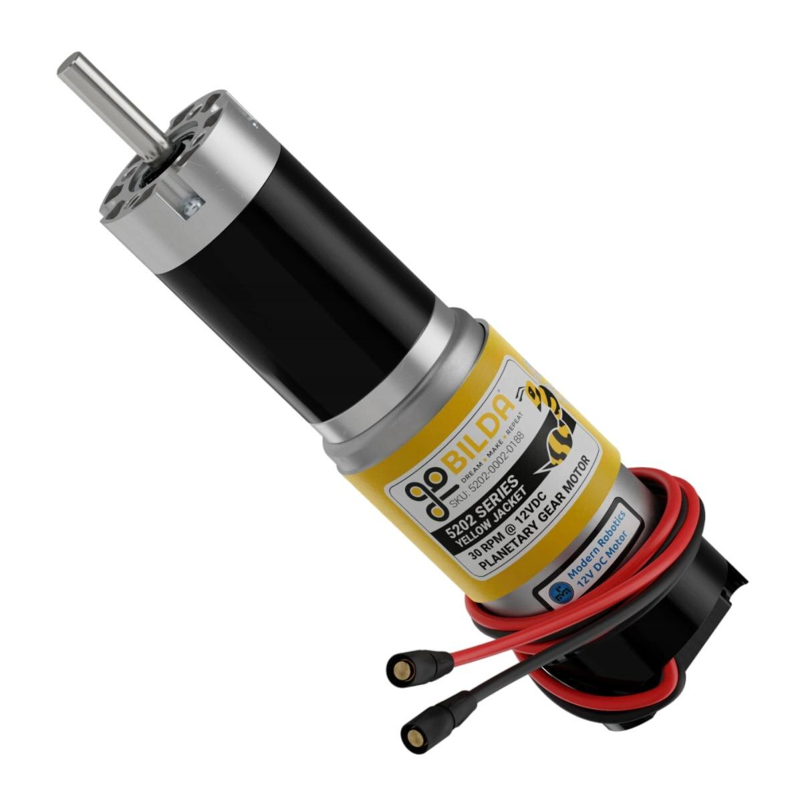
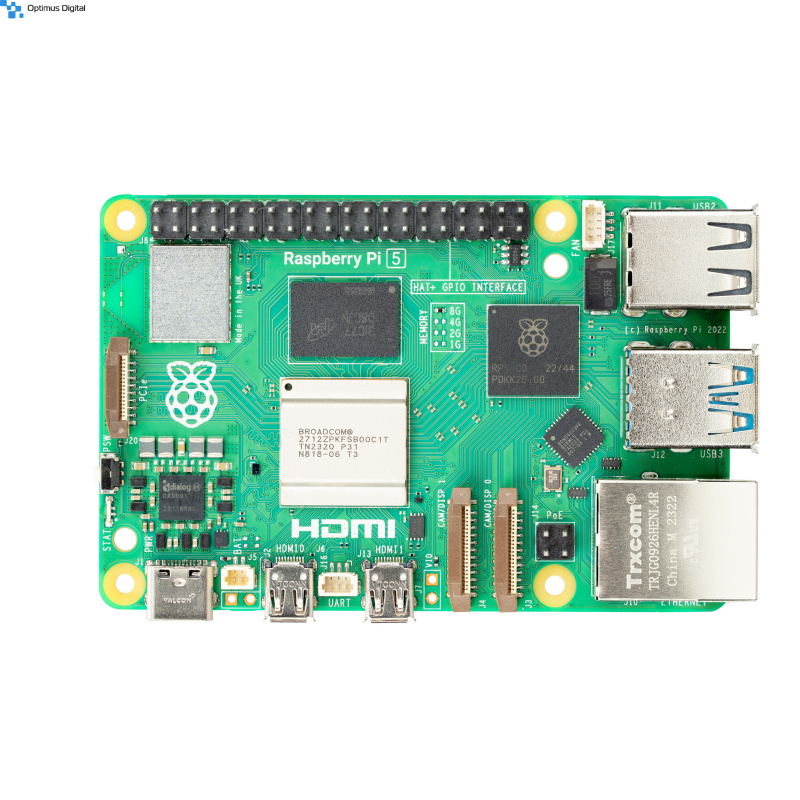

Super ofertă de weekend
Reduceri de 10% 15% la kiturile cu motor + senzor de distanță.
Oferta este valabilă sâmbătă și duminică, în limita stocului.

Componente pentru robotică educațională și hobby
Aici găsești rapid componente pentru proiecte de robotică: motor, servomotor, senzor, Arduino și Raspberry Pi. Oferim inclusiv placă de dezvoltare și module cu infrarosu.
Avem "super-ieftin" doar la produsele marcate, iar la comenzile urgente livrăm ca la carte și cu noaptea în cap.
Anunț urgent: lotul nou de senzor de distanță și senzor de temperatură este disponibil în stoc limitat.
Recomandăm lectura Getting Started with Arduino și citatul clasic
measure twice, cut once
pentru orice proiect hardware.
Protocolul standard folosit la module este I2C.
Pachet firmware vechi v1.2 v1.3.
Pentru specificații complete vezi documentația externă
Arduino Guide
și secțiunea
Wikipedia Raspberry

Construiești mai rapid când alegi componente compatibile din prima.
Reduceri de 10% 15% la kiturile cu motor + senzor de distanță.
Oferta este valabilă sâmbătă și duminică, în limita stocului.
Pachetul include:
Comenzile plasate până la ora 14:00 pleacă în aceeași zi lucrătoare.
Catalog pentru proiecte de robotică: componentă de bază, module și accesorii.
Stoc curent:
| Cod | Produs | Categorie | Stoc |
|---|---|---|---|
| R01 | Arduino Uno R3 | Placă de dezvoltare | 24 |
| R02 | Placă de dezvoltare | 18 | |
| R03 | Raspberry Pi 5 | Single-board computer | 12 |
| R04 | Senzor de temperatură | Senzori | 40 |
| R05 | Servomotor SG90 | Actuatoare | 35 |
| Stoc total afișat: 129 bucăți. | |||
Atenție! Datele sunt orientative și pot varia pe parcursul zilei.

A sosit lot nou de module infrarosu și senzori digitali.
Program extins pentru ateliere de robotică.
Pentru primii pași recomandăm Arduino Uno R3.
Pentru proiecte simple: HC-SR04.
Da, este potrivit pentru proiecte de nivel mediu.
Da, prin e-mail și WhatsApp.
Stoc senzori (sub pragul low):
Încărcare depozit (peste pragul high):
Tutoriale pentru proiecte cu motor, servomotor și senzori.
Formula exprimă viteza medie pentru deplasarea robotului.
{kind=link}